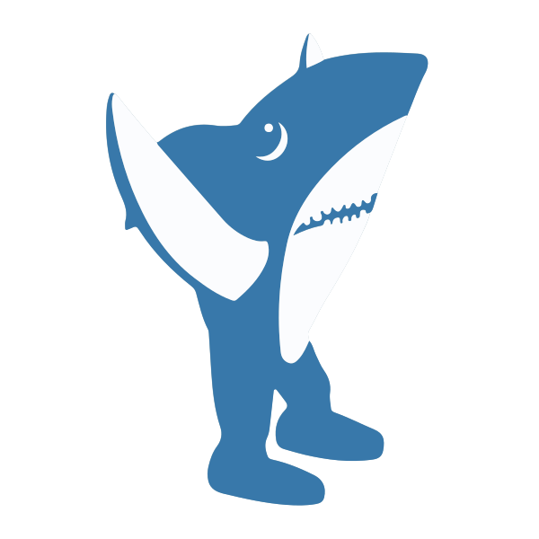

Left Shark
I might be left shark, but I'm the right shark for you.
Define A Left Shark
- To break from the pack in the most awesome way possible.
- To inexplicably deviate from expected routine, despite significant practice and talent.
- An endearingly awkward or incompetent person. Named for Katy Perry's off beat shark-costumed dancer at the Super Bowl halftime show, February 1, 2015.
Follow me on twitter @leftshark